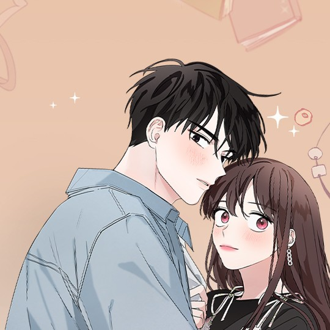
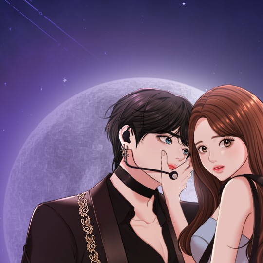
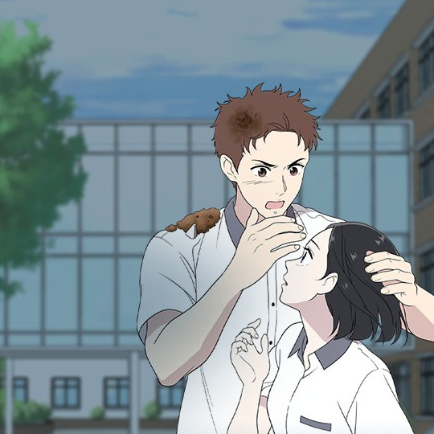
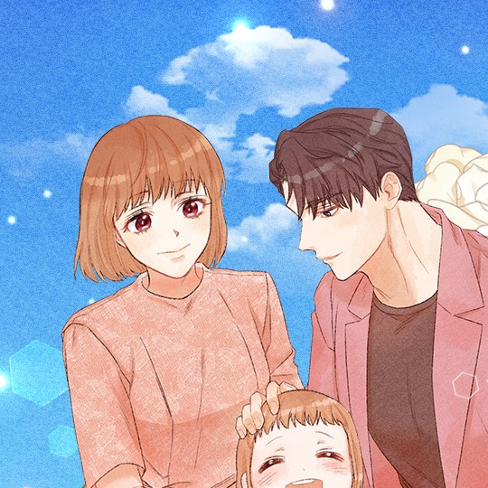

FAVOURITES WEBTOON |
|  |
Gong In-joo was dumped by her boyfriend, Ahn Geurim, for no reason. In-joo, who has been living while depending on Ahn Geurim all this time, feels the emptiness of losing Geurim and plans to get him back. The first thing in the plan is to arouse Geurim's jealousy! To do this, she tries to seduce Seo-yoon, a handsome junior she met during a volunteer work, but Seo-yoon had a crush on someone...What will the end be for the two people who form an alliance to win over love...? |
 |
When Jiu Seo moves out of her childhood friend's mansion and into a small one-bedroom apartment, she thinks her world is ending—that is, until she meets Hajun and Hayul, the neglected children who live downstairs. When a scouting offer comes in for Hajun to join an idol survival program, Jiu encourages him to audition, completely unaware of how it will change the trajectory of her and everyone else's lives forever.
|
|  |
A dramatic Webtoon that focuses on financial status in society. A rich girl who is fighting the stigma while a secret bodygaurd is paid to protect her from bullies. |
 |
It’s hard dating someone who won’t give you the time of day. Su-ae Shim knows that better than anyone, having dated her indifferent boyfriend, Minu Kang, for years. She sometimes wishes she could be more like her charismatic stepsister, Ra-im, who seems to have it all. But life takes a turn for the weird when Su-ae discovers Jellypop, a sentient flip phone, in her locker. Jellypop has a lot to say about her love life, especially as Su-ae drifts further away from Minu and finds herself running into Minu’s friend, Eunhyeok. Add to the mix a growing suspicion that Minu and Ra-im might be more than friends, and Su-ae might need a miracle to navigate the ups and downs of high school romance! |
 |
A world where special police exist to deal with criminals with special abilities. An unreasonable villain comes to Han Do-ryeong, the strongest special police officer who was spending peaceful days! But something’s wrong with this criminal? The worst villain who loves the strongest hero, “Park Rosa’s” crazy love story. |
 |
Chae Yujeong almost lost his future adopted daughter, So Eun, who was brought home by Kang Jiwoon, who is So Eun’s biological uncle, from the orphanage where they lived. In order to defend So Eun, Chae Yujeong was even willing to accept Kang Jiwoon’s marriage proposal and become So Eun’s real mother. Kang Jiwoon, who initially underestimated Chae Yujeong, slowly saw the difference between Chae Yujeong and the mother figure he had seen so far. Will Chae Yujeong be able to heal Kang Jiwoon’s inner wounds and make him believe in love? |
 |
Choi Jung-woo, President of G Cosmetics, an emerging brand in the cosmetics industry and her secretary, Shin Soohyun, an excellent worker with incomparable beauty. One day, a special order from the President came: "Shin Secretary, marry me." . The marriage conditions are so awesome, right?!! Follow those two people office romance! An unpredictable love story! |